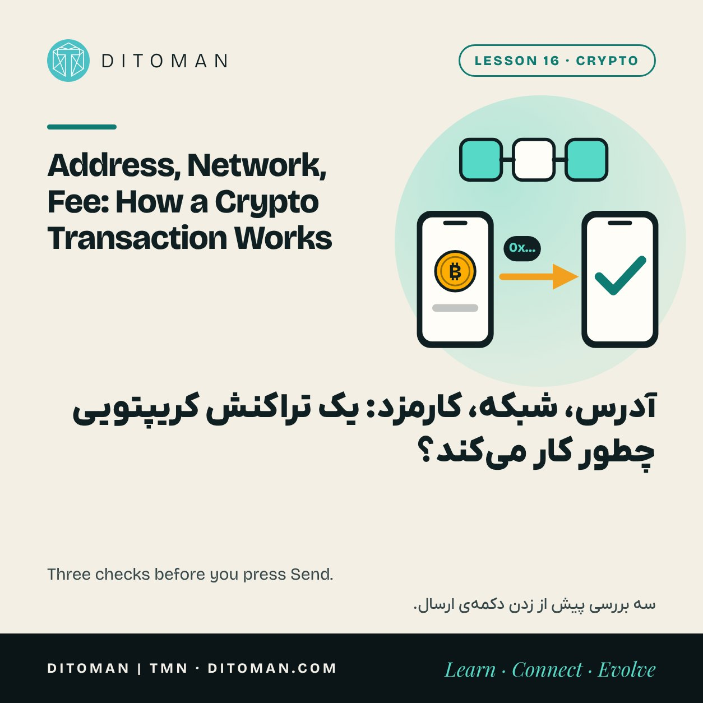
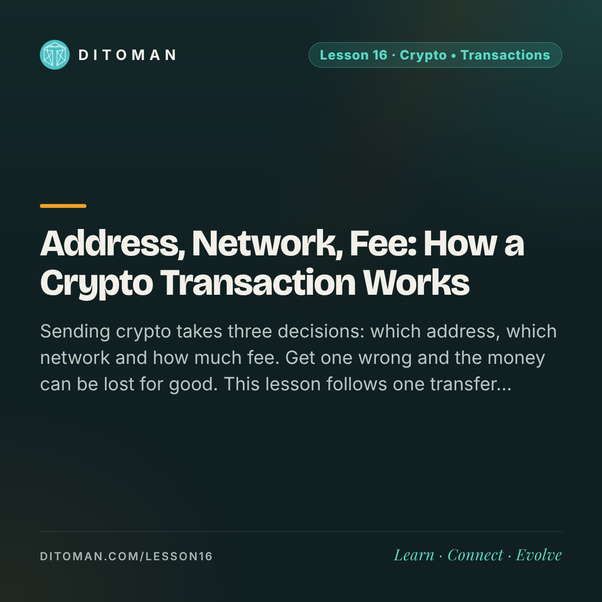

Address, Network, Fee: How a Crypto Transaction Works
آدرس، شبکه، کارمزد: یک تراکنش کریپتویی چطور کار میکند؟
Sending crypto takes three decisions: which address, which network and how much fee. Get one wrong and the money can be lost for good. This lesson follows one transfer from the Send button to the final confirmation.
فرستادن کریپتو سه تصمیم دارد: کدام آدرس، کدام شبکه و چقدر کارمزد. اگر یکی اشتباه باشد، پول ممکن است برای همیشه از دست برود. این درس یک انتقال را از دکمهی «ارسال» تا تأیید نهایی دنبال میکند.
Lesson Content
محتوای درس
Read the lesson in English or Persian.
درس را به فارسی یا انگلیسی بخوانید.
Lesson 14 followed a card payment through five companies. A crypto transfer has none of them. There is you, the receiver and a network of computers that anyone can inspect.
That makes the process simpler and stricter at the same time. Nobody stands in the middle to slow things down, and nobody stands in the middle to fix a mistake. So it is worth walking through it once, slowly, before doing it with real money.
01. The address: where it goes
An address is like an account number: a long string of letters and digits that identifies a wallet. On Ethereum and BNB Smart Chain it starts with 0x and has 42 characters. Bitcoin and Tron addresses look different.
An address is public. Sharing it is safe, because it only lets people send to you. What must stay secret is the private key or recovery phrase from Lesson 13.
Never type an address by hand. Copy and paste it, or scan the QR code, and then compare the first four and last four characters with the original. One wrong character means a different wallet.
02. The network: which road it takes
The same token can exist on several blockchains. USDT, for example, is issued on Ethereum, Tron, BNB Smart Chain and others. They are separate roads that do not connect on their own.
The rule is simple: the sender and the receiver must use the same network. If the receiver's wallet or exchange expects one network and you send on another, the coins may never appear, and getting them back ranges from difficult to impossible.
This is the most common costly mistake beginners make. Before sending, ask the receiver two things: the address and the network.
03. The fee: paying for space
Every transaction pays a fee to the people who run the network. It is often called gas. The fee pays for space in the next block, so it depends on how busy the network is, not on how much you send. Sending 10 dollars or 10,000 dollars can cost the same.
Two details surprise newcomers.
The fee is paid in the network's own coin. To send any token on BNB Smart Chain you need a little BNB. On Ethereum you need ETH, on Tron you need TRX. A wallet with tokens but none of the network coin cannot send anything.
Fees differ widely between networks and from hour to hour. Your wallet shows the fee before you confirm. Read it.
- 1Ask the receiver for the address and the network.
- 2Paste the address and compare the first four and last four characters.
- 3Choose the same network the receiver named.
- 4Check you hold the network coin for the fee, and read the fee.
- 5Send a small test, wait for it to arrive, then send the rest.
- 6Save the transaction hash and look it up in a block explorer.
04. Confirmation: when it is done
After you press Send, the transaction waits to be included in a block. Once included, it has one confirmation. Each later block adds another, and the more confirmations it has, the harder it would be to undo.
Bitcoin produces a block about every ten minutes. Many newer networks take a few seconds. Exchanges often wait for several confirmations before crediting a deposit, which is why a transfer can show as successful in your wallet and still be pending on the other side.
05. Check it yourself
Every transaction gets an ID, called a hash. Paste it into a block explorer, such as BscScan for BNB Smart Chain, and you see the sender, the receiver, the amount, the fee and the status. No company's word is needed.
If a receiver says nothing arrived, the explorer settles it. If it shows success to the right address on the right network, the coins are there.
06. There is no undo
A confirmed transaction is final. No bank, no support desk and no court order can reverse it on the blockchain. The only way back is for the receiver to send it back.
So the habits matter more than anywhere else in finance.
Send a small test first when the address is new or the amount is large.
Check address and network twice, then check the first and last characters once more on the confirmation screen.
Keep a little of the network coin for fees.
Save the transaction hash until the receiver confirms.
What to take from this
An address says where. A network says which road. Both must match the receiver.
The fee is paid in the network's own coin and depends on traffic, not on the amount.
Confirmations make a transaction final, and a final transaction cannot be reversed.
A block explorer shows the truth about any transfer.
A small test transfer is the cheapest insurance there is.
درس ۱۴ یک پرداخت کارتی را میان پنج شرکت دنبال کرد. در انتقال کریپتویی هیچکدام از آنها نیستند. فقط ما هستیم، گیرنده و شبکهای از کامپیوترها که هر کسی میتواند آن را ببیند و بررسی کند.
این، کار را هم سادهتر میکند و هم سختگیرانهتر. کسی در میانه نیست که کار را کند کند و کسی هم نیست که اشتباه را درست کند. برای همین میارزد پیش از انجامش با پول واقعی، یک بار آرام از اول تا آخرش را با هم برویم.
۰۱. آدرس: به کجا میرود
آدرس مثل شمارهحساب است: رشتهای بلند از حرف و عدد که یک کیف پول را مشخص میکند. در اتریوم و BNB Smart Chain با 0x شروع میشود و ۴۲ کاراکتر دارد. آدرسهای بیتکوین و ترون شکل دیگری دارند.
آدرس عمومی است. دادنش به دیگران خطری ندارد، چون فقط اجازه میدهد برایتان بفرستند. چیزی که باید پنهان بماند کلید خصوصی یا عبارت بازیابی درس ۱۳ است.
هیچوقت آدرس را با دست تایپ نکنید. کپی و جایگذاری کنید یا کد QR را اسکن کنید و بعد چهار کاراکتر اول و چهار کاراکتر آخر را با آدرس اصلی مقایسه کنید. یک کاراکتر اشتباه یعنی یک کیف پول دیگر.
۰۲. شبکه: از کدام جاده
یک توکن میتواند روی چند بلاکچین وجود داشته باشد. مثلاً USDT روی اتریوم، ترون، BNB Smart Chain و چند شبکهی دیگر منتشر شده است. اینها جادههای جداییاند که خودبهخود به هم وصل نیستند.
قاعده ساده است: فرستنده و گیرنده باید از یک شبکه استفاده کنند. اگر کیف پول یا صرافی گیرنده منتظر یک شبکه باشد و ما روی شبکهی دیگری بفرستیم، کوینها ممکن است هرگز دیده نشوند و برگرداندنشان از سخت تا ناممکن است.
این رایجترین اشتباه پرهزینهی تازهکارهاست. پیش از ارسال، دو چیز را از گیرنده بپرسید: آدرس و شبکه.
۰۳. کارمزد: هزینهی جا
هر تراکنش کارمزدی به کسانی میدهد که شبکه را اداره میکنند. به آن «گس» هم میگویند. این کارمزد بهای جا در بلاک بعدی است، پس به شلوغی شبکه بستگی دارد، نه به مبلغی که میفرستیم. فرستادن ۱۰ دلار یا ۱۰ هزار دلار میتواند یک اندازه هزینه داشته باشد.
دو نکته تازهواردها را غافلگیر میکند.
کارمزد با کوین خودِ شبکه پرداخت میشود. برای فرستادن هر توکنی روی BNB Smart Chain کمی BNB لازم است. روی اتریوم ETH و روی ترون TRX. کیف پولی که توکن دارد ولی کوین شبکه را ندارد، هیچ چیزی نمیتواند بفرستد.
کارمزد شبکهها با هم خیلی فرق دارد و ساعتبهساعت هم عوض میشود. کیف پول پیش از تأیید، کارمزد را نشان میدهد. آن را بخوانید.
- ۱از گیرنده آدرس و شبکه را بپرسید.
- ۲آدرس را جایگذاری کنید و چهار کاراکتر اول و آخر را مقایسه کنید.
- ۳همان شبکهای را انتخاب کنید که گیرنده گفته است.
- ۴کوین شبکه را داشته باشید تا کارمزد پرداخت شود، و مبلغ کارمزد را بخوانید.
- ۵یک مبلغ کوچک آزمایشی بفرستید، صبر کنید برسد و بعد بقیه را بفرستید.
- ۶هش تراکنش را نگه دارید و آن را در مرورگر بلاک ببینید.
۰۴. تأیید: کی تمام میشود
بعد از زدن «ارسال»، تراکنش منتظر میماند تا در یک بلاک قرار بگیرد. وقتی قرار گرفت، یک تأیید دارد. هر بلاک بعدی یک تأیید دیگر اضافه میکند و هرچه تأییدها بیشتر شود، برگرداندنش سختتر میشود.
بیتکوین تقریباً هر ده دقیقه یک بلاک میسازد. بسیاری از شبکههای جدیدتر چند ثانیه وقت میبرند. صرافیها اغلب پیش از نشاندن واریز منتظر چند تأیید میمانند؛ برای همین انتقال میتواند در کیف پول ما موفق باشد و آن طرف هنوز «در انتظار».
۰۵. خودتان بررسی کنید
هر تراکنش یک شناسه دارد که به آن «هش» میگویند. آن را در یک مرورگر بلاک، مثل BscScan برای BNB Smart Chain، جایگذاری کنید تا فرستنده، گیرنده، مبلغ، کارمزد و وضعیت را ببینید. به حرف هیچ شرکتی نیاز نیست.
اگر گیرنده بگوید چیزی نرسیده، مرورگر بلاک تکلیف را روشن میکند. اگر نشان بدهد تراکنش به آدرس درست و روی شبکهی درست موفق بوده، کوینها همانجا هستند.
۰۶. دکمهی برگشت وجود ندارد
تراکنش تأییدشده قطعی است. هیچ بانک، پشتیبانی یا حکم دادگاهی نمیتواند آن را روی بلاکچین برگرداند. تنها راه برگشت این است که گیرنده خودش پس بفرستد.
برای همین عادتها اینجا از هر جای دیگر در امور مالی مهمترند.
اول یک مبلغ کوچک آزمایشی بفرستید، وقتی آدرس تازه است یا مبلغ بزرگ.
آدرس و شبکه را دو بار بررسی کنید و در صفحهی تأیید، یک بار دیگر کاراکترهای اول و آخر را ببینید.
کمی از کوین شبکه برای کارمزد نگه دارید.
هش تراکنش را نگه دارید تا گیرنده رسیدنش را تأیید کند.
چه برداشتی کنیم
آدرس میگوید کجا. شبکه میگوید از کدام جاده. هر دو باید با گیرنده یکی باشد.
کارمزد با کوین خودِ شبکه پرداخت میشود و به شلوغی بستگی دارد، نه به مبلغ.
تأییدها تراکنش را قطعی میکنند و تراکنش قطعی برگشت ندارد.
مرورگر بلاک حقیقتِ هر انتقال را نشان میدهد.
یک انتقال آزمایشی کوچک ارزانترین بیمهی ممکن است.
Try it with TMN
با TMN تمرین کنید
TMN lives on BNB Smart Chain, so receiving it needs a BNB Smart Chain address in a personal wallet, and sending it needs a little BNB for the fee. The TMN guide walks through it with pictures.
TMN روی شبکهی BNB Smart Chain است؛ پس برای دریافتش آدرس BNB Smart Chain در یک کیف پول شخصی لازم است و برای فرستادنش کمی BNB برای کارمزد. راهنمای TMN این کار را با تصویر نشان میدهد.
Key Concepts
مفاهیم کلیدی
- Wallet address
- Network (blockchain)
- Network fee (gas)
- Network coin
- Block and confirmation
- Transaction hash
- Block explorer
- Finality
- Test transfer
- آدرس کیف پول
- شبکه (بلاکچین)
- کارمزد شبکه (گس)
- کوین شبکه
- بلاک و تأیید
- هش تراکنش
- مرورگر بلاک
- قطعی بودن
- انتقال آزمایشی
Learning Objectives
اهداف یادگیری
- Explain what an address is and why sharing it is safe.
- Say why sender and receiver must use the same network.
- Explain what the network fee pays for and in which coin it is paid.
- Describe what a confirmation is.
- Look up a transaction in a block explorer.
- List the checks to make before sending.
- توضیح دهید آدرس چیست و چرا دادنش به دیگران خطری ندارد.
- بگویید چرا فرستنده و گیرنده باید از یک شبکه استفاده کنند.
- توضیح دهید کارمزد شبکه بهای چیست و با کدام کوین پرداخت میشود.
- بگویید تأیید تراکنش یعنی چه.
- یک تراکنش را در مرورگر بلاک پیدا کنید.
- بررسیهای پیش از ارسال را بشمارید.
Quiz
آزمونک
Check what stayed with you. The answer is under each question.
ببین چه چیزی در ذهنت مانده. پاسخ زیر هر پرسش آمده است.
Question 1
پرسش ۱
Is it safe to share your wallet address?
دادن آدرس کیف پول به دیگران خطری دارد؟
A. No, it lets others take your coins
الف. بله، دیگران میتوانند کوینها را بردارند
B. Yes, it only lets others send to you
ب. نه، فقط اجازه میدهد برایتان بفرستند
C. Only if you share it once
ج. فقط اگر یک بار بدهید خطری ندارد
Correct answer: B
پاسخ درست: ب
Question 2
پرسش ۲
You hold USDT on BNB Smart Chain but no BNB. What happens when you try to send?
روی BNB Smart Chain تتر دارید ولی BNB ندارید. وقتی بخواهید بفرستید چه میشود؟
A. The fee is taken from the USDT
الف. کارمزد از خود تتر کم میشود
B. It cannot be sent; the fee needs BNB
ب. ارسال نمیشود؛ کارمزد BNB میخواهد
C. The receiver pays the fee
ج. گیرنده کارمزد را میدهد
Correct answer: B
پاسخ درست: ب
Question 3
پرسش ۳
What does the network fee mainly depend on?
کارمزد شبکه بیشتر به چه چیزی بستگی دارد؟
A. How busy the network is
الف. شلوغی شبکه
B. The amount you send
ب. مبلغی که میفرستید
C. The receiver's country
ج. کشور گیرنده
Correct answer: A
پاسخ درست: الف
Question 4
پرسش ۴
You sent on a different network from the one the receiver expected. What is the likely result?
روی شبکهای غیر از شبکهی مورد انتظار گیرنده فرستادهاید. نتیجهی محتمل چیست؟
A. The networks convert it automatically
الف. شبکهها خودکار تبدیلش میکنند
B. It returns to you after a day
ب. بعد از یک روز به شما برمیگردد
C. The coins may not appear and may be lost
ج. کوینها ممکن است دیده نشوند و از دست بروند
Correct answer: C
پاسخ درست: ج
Question 5
پرسش ۵
How can you prove a transfer arrived?
چطور میشود ثابت کرد یک انتقال رسیده است؟
A. A screenshot of your wallet
الف. عکس از صفحهی کیف پول
B. The transaction hash in a block explorer
ب. هش تراکنش در مرورگر بلاک
C. A message from support
ج. پیامی از پشتیبانی
Correct answer: B
پاسخ درست: ب
Sources
منابع
- ethereum.org: Gas and fees
- Bitcoin developer guide: Transactions
- BNB Chain documentation: BNB Smart Chain overview
- BscScan: BNB Smart Chain block explorer
Block times and fees change as networks are upgraded. Always read the fee and network shown in your own wallet before confirming.
زمان بلاک و کارمزد با بهروزرسانی شبکهها تغییر میکند. پیش از تأیید، همیشه کارمزد و شبکهای را که کیف پول خودتان نشان میدهد بخوانید.
با هم دنبال میکنیمFollow along
New lessons are announced first on Ditoman's channels.
درسهای تازه اول در کانالهای دیتومان معرفی میشوند.